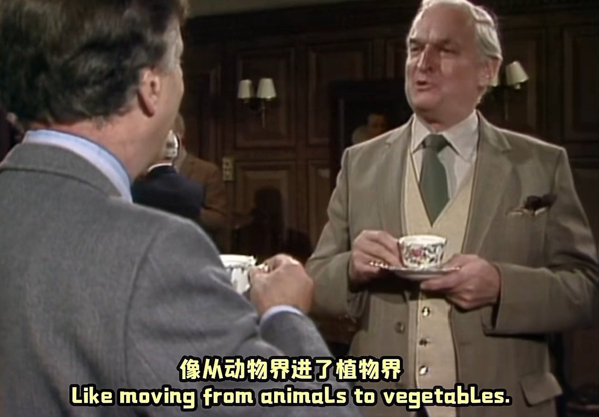

小虚空🍥
@tokerumaisurii
@bolckAshley 什么时候再进一步直接成为左翼安那其主义者

🇩🇪🇪🇺🌹Ashley Block🍥🇹🇼🏳️⚧️
@bolckAshley
都二十一世紀了還抱著「先鋒隊」理論不放的所謂左派實在是老頑固😓
「先鋒隊必然走向腐化墮落」要我說說的還不對，因為這體制本身即「腐化墮落」，它一開始便是凌駕於工人群眾之上的背離群眾的組織。
先鋒隊不會墮落——因為它從未純潔過；同理的，它不會背叛勞工階級——因為它從來就沒有站在勞工這邊。 https://t.co/xYIU3NdRoR